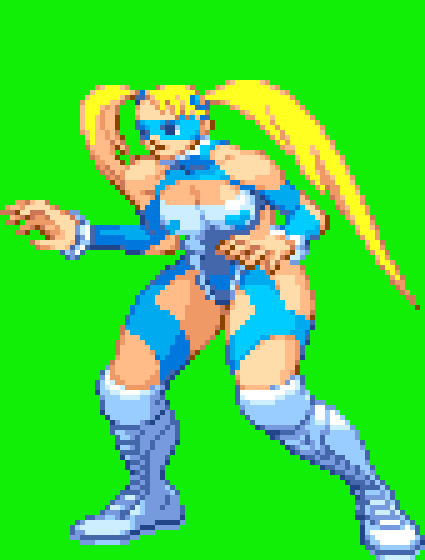

Stance · 8 frames · 8 fps
Guardia de lucha, vista de perfil. La coleta cambia de sitio en cada frame y las botas siguen la referencia de R. Mika.
Cargando frames…
· GIF directo
·
Los 8 frames, uno a uno
Tamaño nativo del recorte, ampliado por el navegador. Así se ve si una pose se repite o si el personaje cambia de tamaño.
Alto real de cada frame: —
Referencia de botas y coleta
R. Mika, pose de guardia, 85×112 px, 17 colores. De aquí salen las botas (caña alta, vuelta, panel claro, banda en el empeine, suela) y la coleta única. Tiene dos: la pequeña se descarta.

Medidas contra tu referencia
Referencia: el frame de 30×64 que me diste. Azul = dentro de banda, rojo = fuera.
| Métrica | Objetivo | Este stance | |
|---|---|---|---|
| Alto | 64 px | 79–91 px | +36 % |
| Ancho | 30 px | 59–77 px | +157 % |
| Tinta | 940 px | 2 535–2 820 | +175 % |
| Contorno | 7,1 % | 17,7–18,9 % | +165 % |
| Pelo (coleta) | 31,2 % | 18,1–25,9 % | −42 % |
| Cabeza | 27 px | 36–38 px | +41 % |
| Colores | 21 | 21 | exacto |
Lo que hay que arreglar, en corto: el cuerpo es demasiado ancho y bajo y el
contorno demasiado grueso. Las botas y la coleta sí están bien.
↩ Volver al modelo original